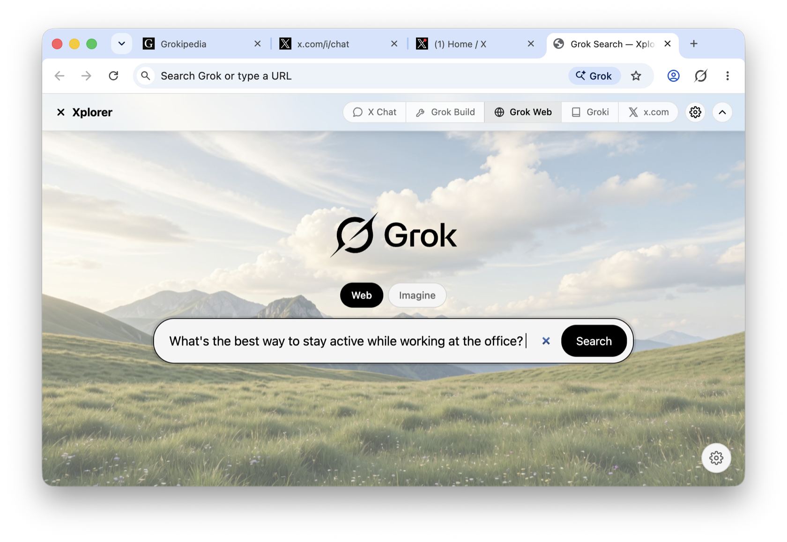
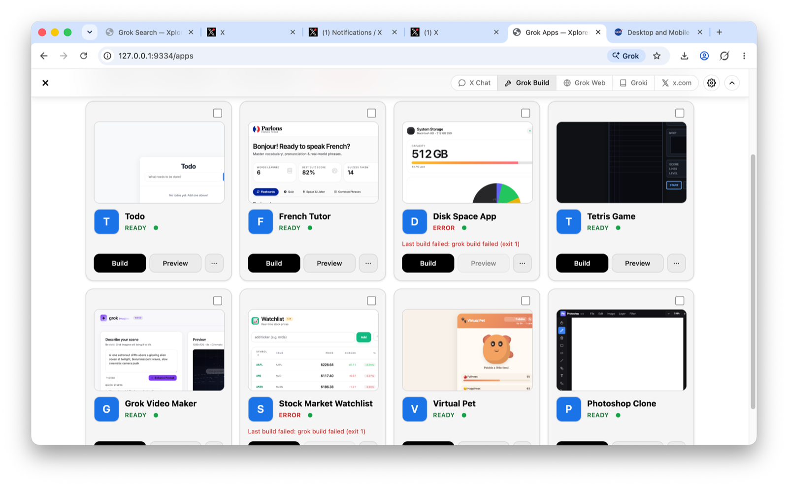
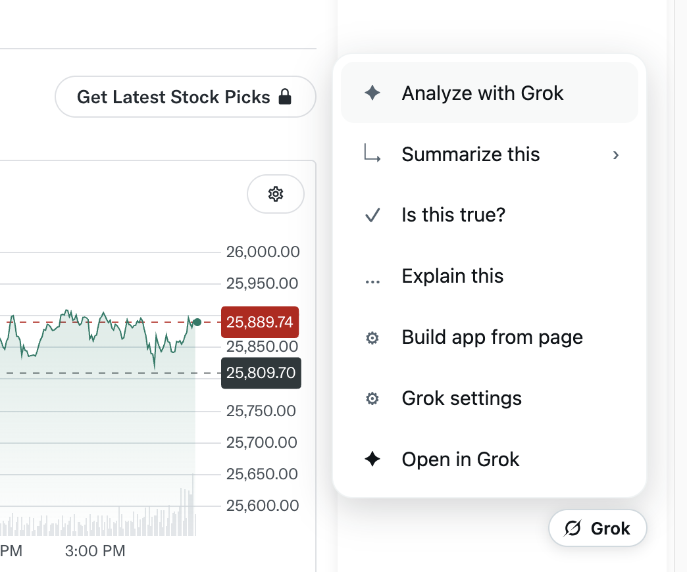
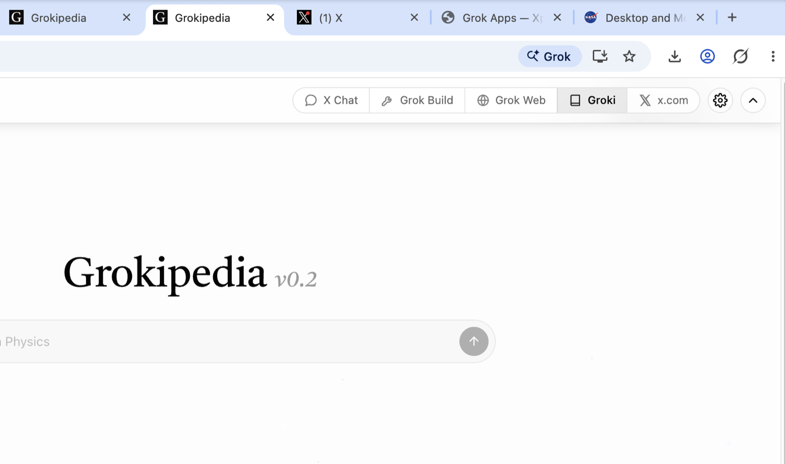
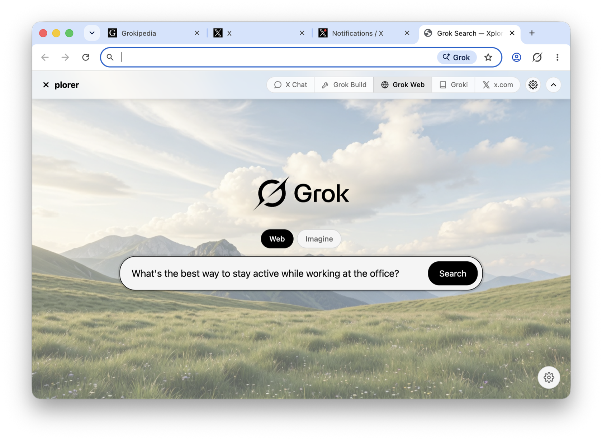
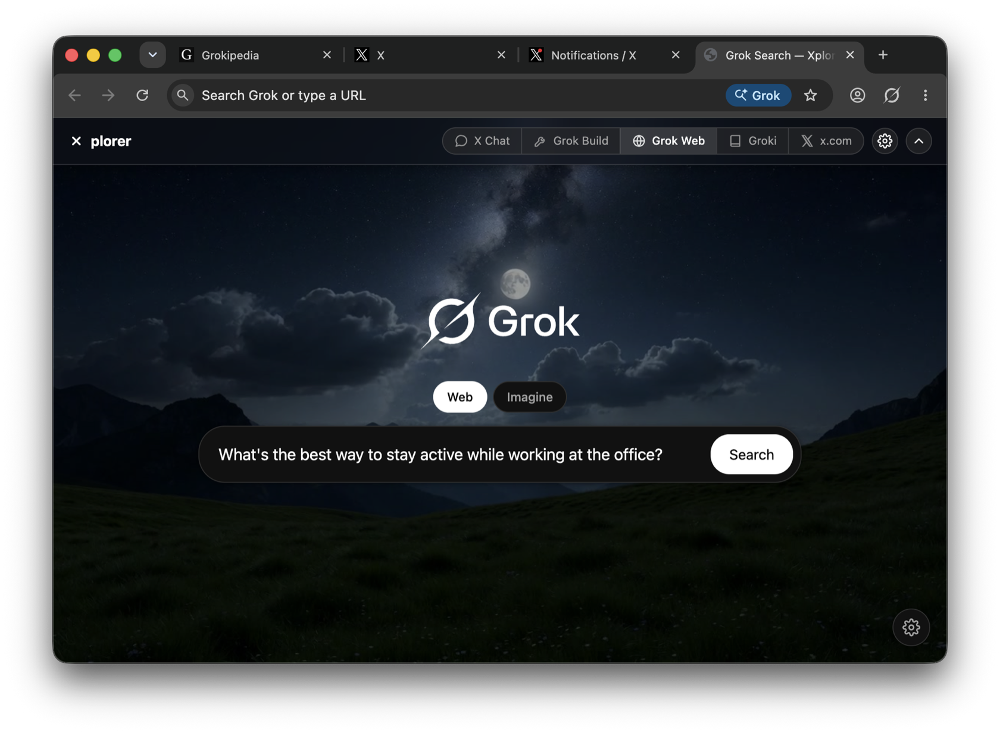
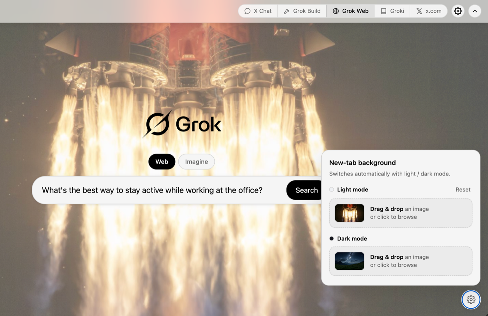
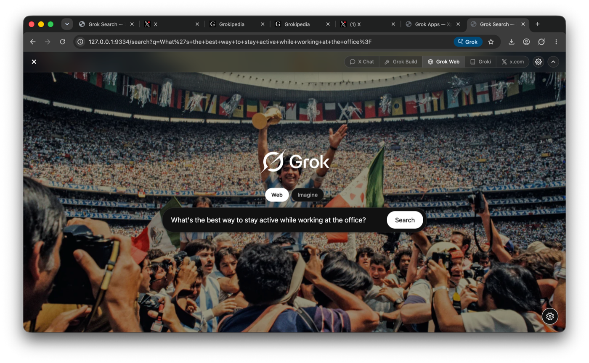

✦
The “Grok it” button
A floating Grok button on every page. Summarize the long read, fact-check the claims (“Is this true?”), explain it, or analyze it — your page is handed to Grok with one click.
Search, chat, build apps, and control tabs — with Grok built into every page. No extensions, no copy-paste. Just ask.

A real, full-featured browser — every site works, every extension runs, with the sandboxing you expect. Grok is added at the core, not bolted on as a tab.
Real, shipping features — not a chat box in a sidebar.
A floating Grok button on every page. Summarize the long read, fact-check the claims (“Is this true?”), explain it, or analyze it — your page is handed to Grok with one click.
Describe an app in plain words and Grok writes it, then runs it live in a tab. Watch it build, then keep iterating just by chatting — “make the header sticky,” and it does.
Every build gets its own folder and a dedicated conversation. Browse the gallery, filter by status, rename, duplicate, export to a zip, or relaunch — your apps and chats stay organized.
New tabs open Grok Search. Type a query and it runs on grok.com with full context — Web and Imagine modes built in.
A unified toolbar across Grok Build, Grok Web, Imagine, Groki, and X — on Xplorer's own pages and as an overlay on grok.com, x.com, and Grokipedia.
Xplorer ships as an MCP server with an always-on local gateway, so agents like Grok, Claude, and Cursor can drive the browser natively — tabs, navigation, clicks, screenshots.
A few looks at Xplorer doing its thing. (Swap these placeholders for real screenshots.)
Type what you want on the Apps page and Grok writes the files for you — you watch it think and build in real time. The finished app runs live in a preview right beside the chat. Don't like something? Just tell Grok, and it edits the app in place, remembering everything from before.

Every page gets a floating Grok button. One click and Grok works on what you're actually looking at — pick an action:

A single glass toolbar follows you across Grok Build, Grok Web, Imagine, Groki, and X — even as an overlay on grok.com, x.com, and Grokipedia. Jump between Grok's services without leaving the page, and hide it whenever you want focus.

Every new tab opens Grok Search on a beautiful landscape by default — or make it yours. Set your own background image for light and dark mode by drag‑and‑drop or browse, and Xplorer remembers it. It switches automatically with your theme.




Soon you'll be able to ask Grok to finish the work you're doing on the page you currently have open — fill out the form, click through the flow, complete the task — without leaving your tab or handing off to another tool.
The page-driving engine already lives inside Xplorer — today it powers external agents through the gateway. We're bringing that same power to a single ask: “Grok, finish this for me.”
Xplorer runs an always-on local gateway and ships as an MCP server — so any agent can drive it, with no launch flags and no setup dance.
# Always-on local gateway — no launch flags, no setup.
CDP ws://127.0.0.1:9333 # Playwright / Puppeteer compatible
Agent API http://127.0.0.1:9334 # navigate · text · click · type · screenshot · tabs
# …or register the bundled MCP server, and your agent
# (Grok, Claude, Cursor) gets native browser tools.
Download Xplorer and explore the web with Grok at its core. Free, open source, and getting better every week.
macOS (Apple Silicon) · more platforms coming